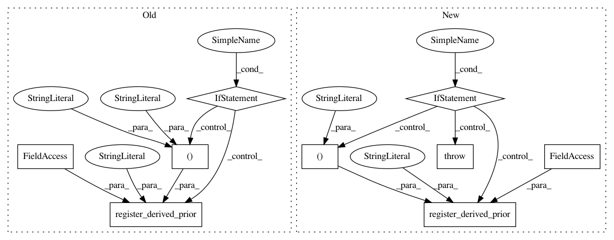

9c526695805c9639896b31364958d0e77bdeba62,gpytorch/likelihoods/multitask_gaussian_likelihood.py,MultitaskGaussianLikelihood,__init__,#MultitaskGaussianLikelihood#Any#Any#Any#Any#Any#,27
Before Change
super(MultitaskGaussianLikelihood, self).__init__(batch_size=batch_size, log_noise_prior=log_noise_prior)
if rank == 0:
self.register_parameter(
name="log_task_noises",
parameter=torch.nn.Parameter(torch.zeros(batch_size, num_tasks)),
prior=task_prior,
)
else:
self.register_parameter(
name="task_noise_covar_factor", parameter=torch.nn.Parameter(torch.randn(batch_size, num_tasks, rank))
)
if task_prior is not None:
self.register_derived_prior(
name="MultitaskErrorCovariancePrior",
prior=task_prior,
parameter_names=("task_noise_covar_factor", "log_noise"),
transform=_eval_covar_matrix,
)
self.num_tasks = num_tasks
def forward(self, input):
After Change
then a diagonal covariance matrix is fit.
task_prior (:obj:`gpytorch.priors.Prior`): Prior to use over the task noise covariance matrix if
`rank` > 0, or a prior over the log of just the diagonal elements, if `rank` == 0.
super(MultitaskGaussianLikelihood, self).__init__(batch_size=batch_size, log_noise_prior=log_noise_prior)
if rank == 0:
self.register_parameter(
name="log_task_noises",
parameter=torch.nn.Parameter(torch.zeros(batch_size, num_tasks)),
prior=task_prior,
)
else:
self.register_parameter(
name="task_noise_covar_factor", parameter=torch.nn.Parameter(torch.randn(batch_size, num_tasks, rank))
)
if task_prior is not None:
self.register_derived_prior(
name="MultitaskErrorCovariancePrior",
prior=task_prior,
parameter_names=("task_noise_covar_factor", "log_noise"),
transform=self._eval_covar_matrix,
In pattern: SUPERPATTERN
Frequency: 3
Non-data size: 9
Instances
Project Name: cornellius-gp/gpytorch
Commit Name: 9c526695805c9639896b31364958d0e77bdeba62
Time: 2018-11-14
Author: gardner.jake@gmail.com
File Name: gpytorch/likelihoods/multitask_gaussian_likelihood.py
Class Name: MultitaskGaussianLikelihood
Method Name: __init__
Project Name: cornellius-gp/gpytorch
Commit Name: 529456c17464022d42e1c343bec52f2d4d77e79b
Time: 2018-10-29
Author: balandat@fb.com
File Name: gpytorch/likelihoods/multitask_gaussian_likelihood.py
Class Name: HomoskedasticMultitaskGaussianLikelihood
Method Name: __init__
Project Name: cornellius-gp/gpytorch
Commit Name: 199db3617508c0512e3626ff20a0fcd257dae8d2
Time: 2018-10-29
Author: balandat@fb.com
File Name: gpytorch/likelihoods/multitask_gaussian_likelihood.py
Class Name: MultitaskGaussianLikelihood
Method Name: __init__